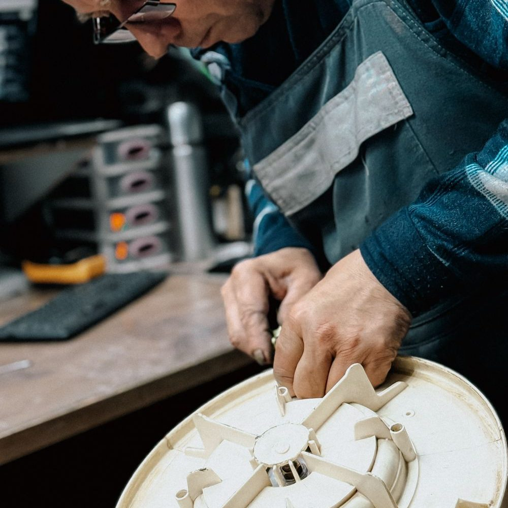

About
Affordable rates. Fast service. Dependable. Lots of experience. Fast response time.
Visit & Contact
Phone
(207) 719-4034
Service area
Serving Sanford, ME 04073 and surrounding York County
Hours
Mon–Fri 8 AM–6 PM
Sat–Sun Closed
Services & Prices

Illustrative photo
- Washer & dryer repair
- Oven & stovetop repair
- Dishwasher repair
- Fridge, freezer & ice maker repair
- Commercial service available
- Free estimates
From the business's own Google and Angi profiles (checked Oct 30, 2026). Prices aren't published — free estimates on request.
Reviews
Sample reviews for this demo — your real customer reviews would go here.
★★★★★“Got our appliance working again quickly. Friendly and knowledgeable.”
— Sample review
★★★★★“Fair, honest and reliable. Saved us from having to buy a new one.”
— Sample review